《CSAPP（第三版）》读书笔记（第 4-5 章）
书接上文，本文为第 4-5 章的笔记。
第四章、处理器体系结构
- Page 243ISA 在编译器编写者和处理器设计人员之间提供了一个概念抽象层。编译器编写者只需知道允许哪些指令，以及它们是如何编码的；而处理器设计者必须构造出执行这些指令的处理器。
- Page 245程序员可见状态：程序寄存器、条件码（rflags）、程序计数器（PC）、内存以及状态码（表明程序是否正常运行或发生了某个特殊事件，比如“异常”）。
- Page 246假想的 Y86-64 指令集：
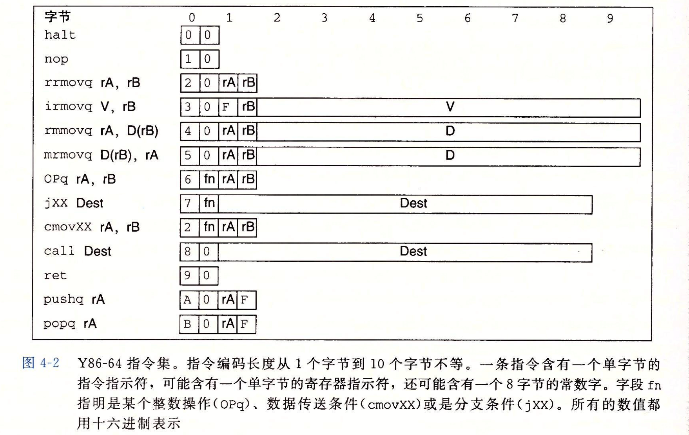
- 每条指令的第一个字节表明类型，被分为“代码部分”（高 4 位）与“功能部分”（低 4 位）。代码值为 0~0xB，功能值只有在一组相关指令共用一个代码时才有用；
- 程序寄存器存放在 CPU 中的一个寄存器文件中。这个文件是一个小的、以寄存器 ID（0~0xF）作为地址的随机访问存储器（RAM）；诸如
pushq等指令的另一个寄存器指示符被设置为 “0xF”（为编码值的一部分），表明不应访问任何寄存器。
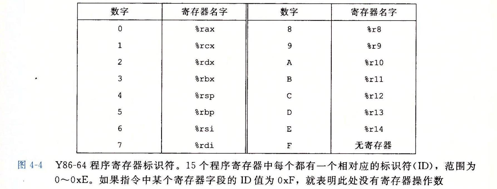
- Page 250CISC 与 RISC：
- ARM（Acorn RISC Machine）;
- 今天的 RISC 机器的指令表中有几百条指令，几乎与“精简指令集机器”的名称不相符了；
- 而比较新的 CISC 机器也利用了高性能流水线结构，它们读取 CISC 指令，并翻译成比较简单的、像 RISC 那样的操作序列。
- Page 256大多数现代电路技术都是用信号线上的高低电压来表示不同的位值的。逻辑 1 使用 1.0 伏特左右的高电压表示；逻辑 0 使用 0.0 伏特左右的低电压表示。而一个数字系统需要三个组成部分：*可进行位操作的函数组合逻辑、存储位的存储器单元、控制存储器单元更新的时钟信号。
- Page 257HCL（硬件控制语言） -> HDL（硬件描述语言，如 Verilog / VHDL）-> 硬件。
- Page 257逻辑门：数字电路的基本计算单元。
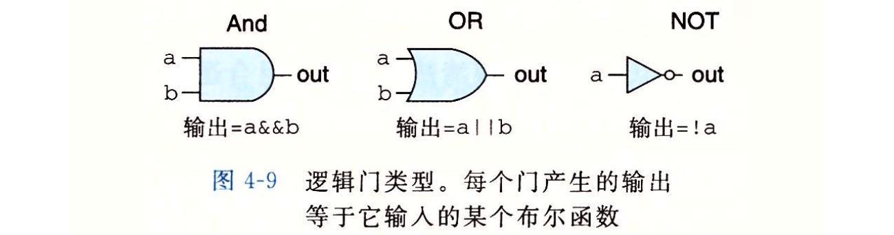
- AND 和 OR 门可以拥有多路输入（n > 2）；
- 逻辑门总是活动的，一旦一个门的输入变化了，在很短的时间内，输出就会相应地变化；
- 将很多逻辑门组合成一个网，就能构建计算块，即“组合电路”；
- 逻辑门可以使用的输入：(1) 一个系统输入；(2) 某个存储器单元的输出；(3) 某个逻辑门的输出；
- 两个或多个逻辑门的输出不能连接在一起，否则可能会产生信号矛盾；
- 网必须是“无环”的，否则会导致网络计算的函数有歧义。
- 没有 C 语言中“短路”（部分求值）的概念。
- Page 261算数/逻辑单元（ALU）是一种重要的组合电路：
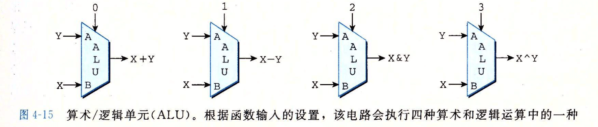
- 电路有三个输入：标号为 A 和 B 的两个数据输入，以及一个控制输入（分别对应 “Opq” 指令的 “fn” 位，即“功能部分”的值）。
- Page 262存储器和时钟：组合电路（combinational circuit）不存储任何信息，仅简单地响应输入信号，产生等于输入的某个函数的输出。而时序电路（sequential circuit）则具有状态，可以存储信息。存储设备是由同一个时钟控制的，而时钟是一个周期性信号，决定什么时候要把新值加载到设备中。两类存储器设备：
- 时钟寄存器（简称“寄存器”，为硬件上的表述）：存储单个位或字（程序计数器 PC、条件代码 CC 寄存器，以及“程序状态寄存器”等）。时钟信号控制寄存器加载输入值；
- 随机访问存储器：存储多个字，用地址来选择该读或写哪个字。例子包括：
- 处理器的虚拟内存系统；
- 寄存器文件。以寄存器标识符作为地址，一个寄存器文件中可以有多个程序寄存器，如：%rax~%r15。
（某些情况下，对时序电路的“读”操作是不受时钟控制的）
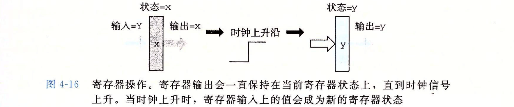
- 对于硬件寄存器来说，时钟的高低电位控制着寄存器的输出变化，同理的还有寄存器文件和随机访问存储器。硬件寄存器主要用于作为电路不同部分中的组合逻辑之间的屏障。
- Page 264执行一条指令的各个阶段：
- 取指：从内存读取指令字节，地址为程序计数器 PC 的值。并将指令字节划分为各个部分（指令代码、指令功能、寄存器指示符等）。除此之外，还可能取出下一条指令的地址（ valP）。指令立即数参数为 valC；
- 译码：从寄存器文件读入操作数。可得到 valA / valB；
- 执行：ALU 要么执行指令指明的操作，计算内存引用的有效地址，要么增加或减少栈指针，同时也可以设置条件码。对于条件传送指令，此时会检验条件码和传送条件，若成立则更新目标寄存器。对于跳转指令来说，此时会决定是否应该选择分支。计算后得到值 ValE；
- 访存：可以将数据写入内存，或者从内存中读出；读取到的值为 ValM；
- 写回：可以将结果写到寄存器文件；
- 更新 PC：将 PC 设置为下一条指令的地址。
- 部分指令在各个阶段的执行细节：
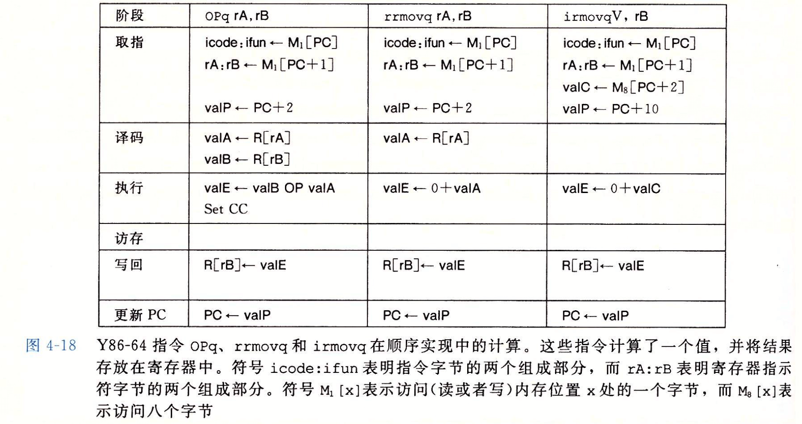
pushq 与 popq 的执行细节：
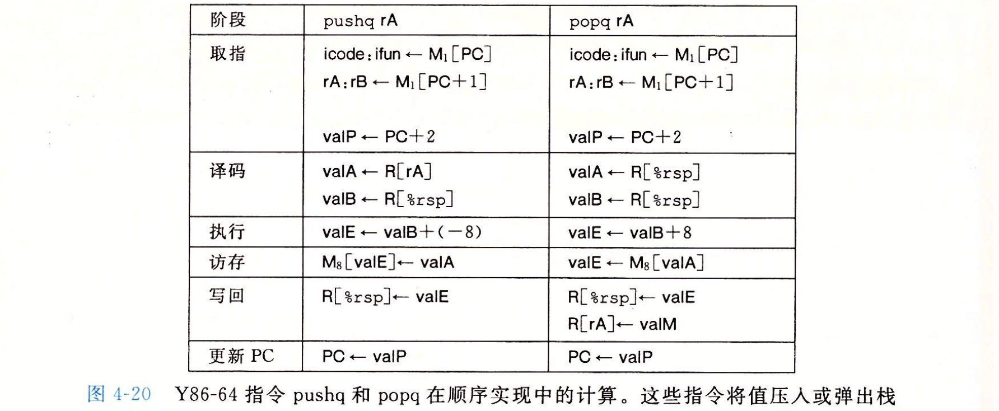
条件跳转、call 与 ret 的执行细节：
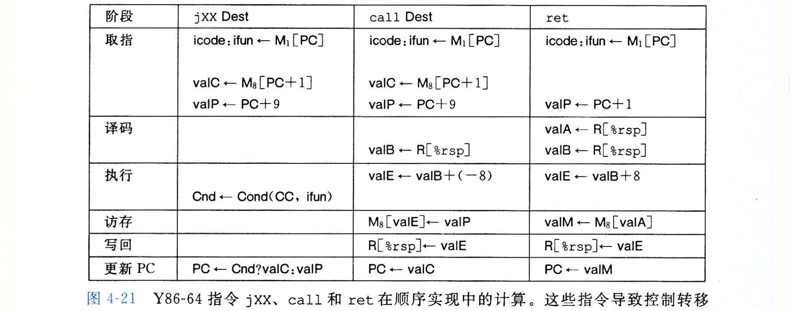
- 条件跳转指令在执行阶段，会检查条件码和跳转条件来确定是否要选择分支，并产生一个一位的信号 Cnd。而在更新 PC 阶段，则会检查这个标志，如果 Cnd 的值为 1 则跳转到目标，否则执行下一条指令。
- Page 273上述 Y86-64 SEQ（Sequential）顺序处理器的硬件实现图：
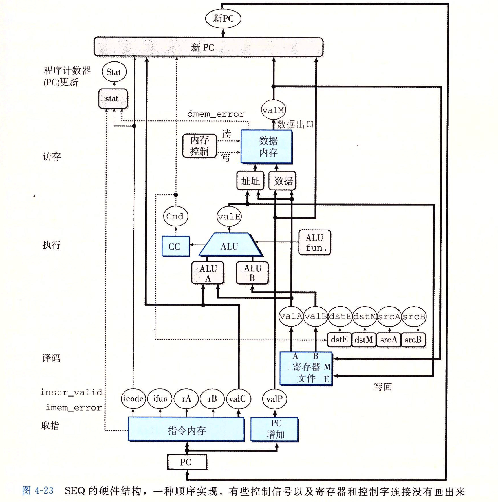
- 符号表示：
- 白色方框：时钟寄存器；
- 浅蓝色方框：硬件单元。包括内存、ALU 等；
- 灰色圆角矩形：控制逻辑块。用于从一组信号源中进行选择，或用来计算一些布尔函数；
- 白色圆圈：线路名字；
- 中等粗线：宽度为字长的数据连接，代表一簇 64 根线并列连在一起；
- 细线：宽度为字节或更窄的数据连接，代表一簇 4/8 根；
- 虚线：单个位的连接。代表芯片单元与块之间传递的控制值。
- Page 275要控制处理器中活动的时序，只需要寄存器和内存的时钟控制（对于写操作）。并且，处理器从来不需要为了完成一条指令的执行而去读由该指令更新了的状态（比如
pushq指令不会从内存中重新读取指令执行过程中修改过的 %rsp 的值）。
- SEQ 硬件状态变化图：
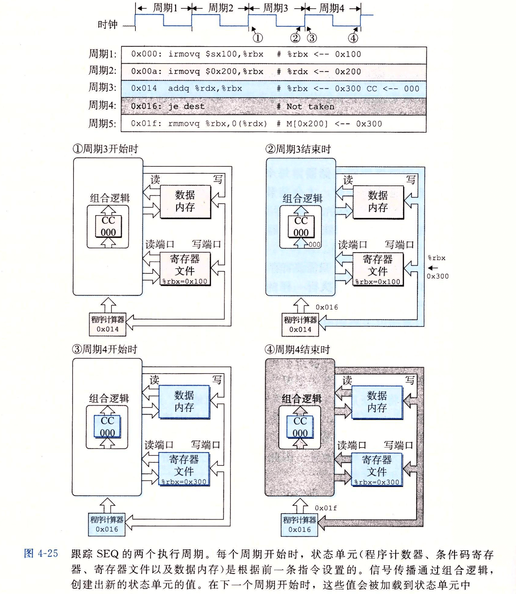
- “读操作”沿着这些单元传播，就好像它们是组合逻辑。而“写操作”是由时钟控制的；
- *存储器相关组件（程序计数器、条件码寄存器、寄存器文件以及数据内存）的值变化需要一个时钟周期，即：本周期产生的新值，会在下个周期的高电位时发生变化。而组合逻辑的变化则是在本周期内直接完成的，并且组合逻辑的反应会产生新的状态单元的值；
- SEQ 的问题：时钟必须非常慢才能让信号在一个周期内传播所有的阶段，这种方法不能充分利用硬件单元，因为每个单元只能在整个时钟周期的一部分时间内被使用。
- Page 282非流水线和流水线化：
- 非流水线下，在开始下一条指令之前必须先完成前一个；
- 流水线化的特征：提高了系统的吞吐量，但也同时轻微地增加了延迟（从头到尾执行一条指令所需时间）。前者是由于整个指令的执行被划分为了几个阶段，这使得指令的执行不需要完全等到上一条指令执行完成；而后者是由于每个划分出的子指令阶段中增加的“流水线寄存器”导致的；
- 吞吐量：每秒能够完成的指令条数。倒数为延迟。
- 流水线操作的一个时钟周期：
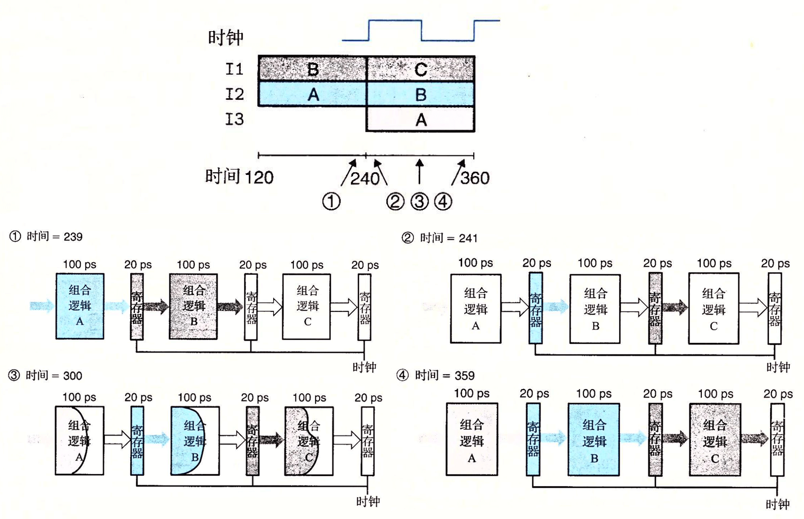
- 组合逻辑本身可以在一个时钟周期内完成，而寄存器从输入到输出的改变需要横跨两个周期（流水线阶段之间的指令转移是由时钟信号来控制的）；
- 图 3 的“波阵面”表示在组合逻辑内部，信号可能以不同的速率通过各个不同的部分；
- 减缓时钟不会影响流水线的行为，反之如果时钟太快可能值还来不及通过组合逻辑，当时钟上升时，寄存器的输入还不是合法值；
- 一些可能降低流水线效率的因素：
- 不一致的划分：每个阶段组合逻辑的耗时不一致，导致某些阶段有很多空闲时间。系统的吞吐量受最慢阶段的速度所限制；
- 流水线过深，收益反而下降：在组合逻辑被分成较小的块时，由寄存器更新引起的延迟就成为了一个限制因素。
- 流水线相关：
- 数据相关：后续指令依赖前一条指令的执行结果；
- 控制相关：后续将要执行的指令依赖于前一条条件测试指令的结果。
- Page 291Y86-64 处理器流水线化的硬件结构：
- 流水线寄存器 F：保存程序计数器的预测值；
- 流水线寄存器 D：位于取指和译码阶段之间。保存关于最新取出指令的信息；
- 流水线寄存器 E：位于译码和执行阶段之间。保存关于最新译码指令和从寄存器文件读出的值的信息；
- 流水线寄存器 M：位于执行和访存阶段之间。保存最新执行的指令结果，以及用于处理条件转移的分支条件（Cnd）和分支目标的信息；
- 流水线寄存器 W：位于访存阶段和反馈路径之间。反馈路径将计算出来的值提供给寄存器文件写，而当完成
ret指令时，它还要向 PC 选择逻辑提供返回地址。
- 一些说明：
- “Predict PC” 控制块会从 PC 增加器计算出的 valP 或取出的指令中的地址 valC 进行选择，以作为下一次预测值。“Select PC” 会从预测值、到达流水线寄存器 M 的不选择分支指令的 valP（M_valA）、
ret指令返回地址（W_valM）中选择一个，其选择过程还会受到条件码的影响（M_Cnd）； - 译码阶段的 “Sel+Fwd A” 控制块会从寄存器输出口 A 或 valP 的值选择一个出来，同理 “Fwd B” 会接收从寄存器输出口 B 输出的值。同时，上述这些值还可能来自于从上层阶段“转发”回来的值；
- 每个流水线寄存器中都包括一个状态码 stat，如果一条指令在其处理中于某个阶段产生了一个异常，这个状态字段就被设置成指示异常的种类。该状态与指令其他信息一起沿着流水线传播，直到它到达写回阶段。此时，流水线控制逻辑发现了异常，并停止执行；
- 对于条件跳转指令，默认情况下 PC 分支预测会选择“跳转”作为预测值。而当一条预测错误的分支进入“访存”阶段时（执行阶段之后才会有 M_Cnd 指明条件跳转的成败），会从流水线寄存器 M 中读取该指令的 valP 值（条件跳转失败），以跳转到正确的地址。
- Page 293PC 分支预测：如果取出的指令是条件分支指令，要到几个周期后，处理器才知道是否要选择该分支。类似地，对于
ret指令来说，要到指令通过“访存”阶段后，才能确定返回地址。（使用条件传送而非条件控制转移，以优化性能。条件传送指令不会影响流水线的推进，即它不会修改 PC，因此后续需要执行的指令也是可见，并且可以提前进入流水线的）
- 高性能处理器利用了“大多数函数调用，会返回到调用后的那条指令”这一属性，在“取指”单元中放入一个硬件栈来存储返回地址。在遇到
ret指令时直接使用该栈顶部的地址作为预测跳转地址；
- Page 295流水线冒险（hazard）：相邻指令间的“相关”导致的流水线计算错误问题。
- 数据相关：下一条指令会用到这一条指令计算出的结果；
- 控制相关：一条指令要确定下一条指令的位置，例如在执行跳转、调用或返回指令时。
- 一个“流水线冒险”的例子：
- 解决“流水线冒险”的；几个方案：
- 用暂停（stalling）来避免数据冒险（动态插入
nop指令）：让处理器停止流水线中一条或多条指令，直到冒险条件不再满足。缺点是：严重降低了处理器的整体吞吐量。*下图可以竖向按照每个时钟周期的方式来看，每个周期都对应从 F~W 各个流水线寄存器的状态，它们分别可以被设置为“正常”、“气泡”与“暂停”三种状态。其中气泡表示复位状态，暂停则保持寄存器中的值不变一个周期。
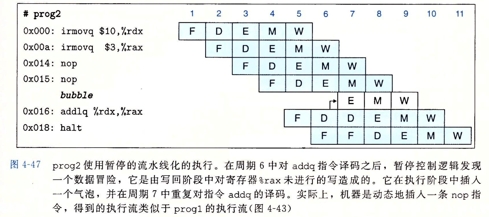
- 用转发（data forwarding）来避免数据冒险：将结果值从一个流水线阶段传送到较早阶段的技术（这些值可以是来自流水线寄存器的值，也可以是由 ALU 刚刚计算得出的信号值）。
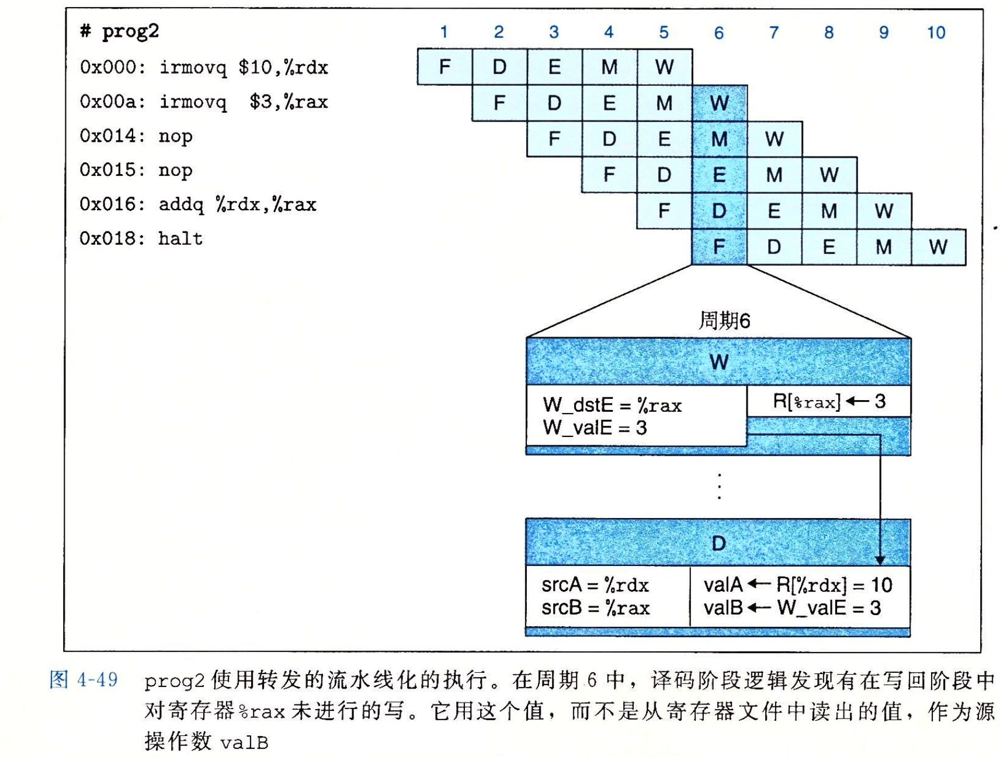
- 加载互锁（load interlock）：解决诸如
mrmovq等需要“内存读”，且由于译码阶段与访存阶段相差一个时钟周期，导致周期较后的指令的数据冒险问题。方式是结合“暂停”与“转发”。缺点是：会稍微降低流水线吞吐量。
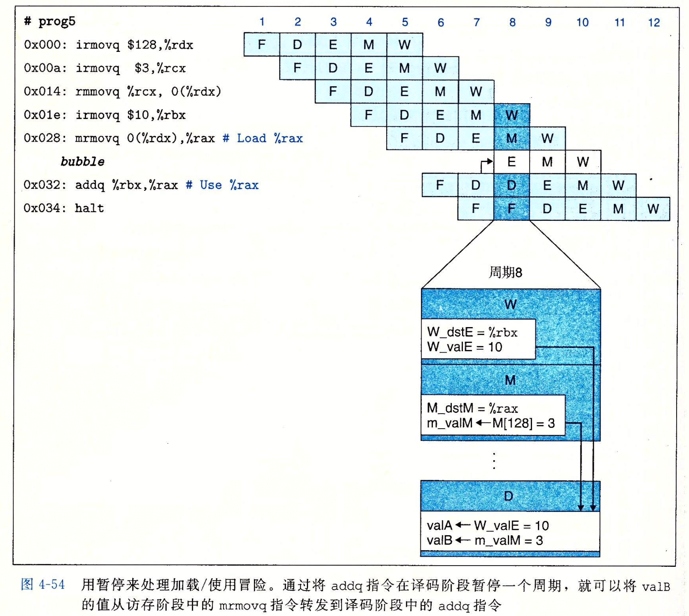
- 避免控制冒险：控制冒险可以发生在
ret与跳转指令中。预测跳转指令会选择跳转分支，当条件跳转指令进行到“执行”阶段后，会通过改变 M_Cnd 条件码的方式来使 PC 重新选择指令。这时，已经进入流水线的错误指令会被取消（指令排除）。缺点是：对错误指令的处理过程浪费了时钟周期。（ret指令的处理与下图稍有不同，取指阶段会反复取出ret指令后面的指令，但是流水线控制逻辑会在译码阶段插入气泡，停止其执行，而非让后序指令继续执行）
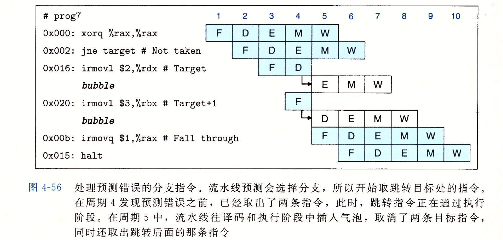
- Page 307流水线化系统中异常报告的细节问题：
- 异常优先级：由流水线中最深的指令引起的异常，优先级越高，会被优先报告给操作系统；
- 错误分支指令的异常：当首先取出一条指令，开始执行时导致了一个异常，而后来由于分支预测错误，取消了该指令。在这种情况下，我们要避免这类异常的出现；
- 避免异常指令之后的指令改变系统状态：一条指令导致了异常，而后面的指令在异常指令完成之前应该禁止其改变系统的状态（比如在“执行”阶段的 CC 状态码等）。
- Page 311“转发”的优先级（即应该转发哪一个转发源的值？）：流水线化的实现应该总是给处于最早流水线阶段（最接近当前指令的）中的转发源以较高的优先级。
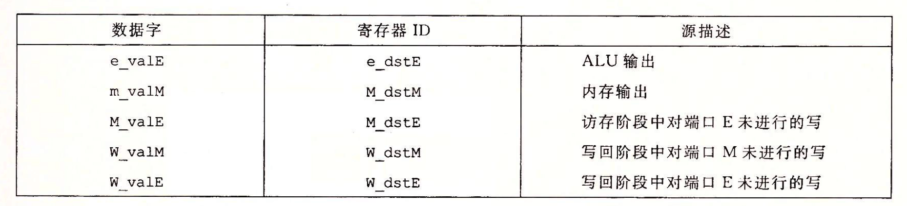
- d_valB 的转发选择与 d_valA 类似，只是没有其第一个对 D_valP 的重用（Sel）。
- Page 314流水线控制逻辑需要处理的情况（针对假想的 Y86-64 架构）：
- 加载/使用冒险：在一条从内存中读出一个值的指令和一条使用该值的指令之间，流水线必须暂停一条周期；
- 处理 ret：流水线必须暂停直到
ret指令到达写回阶段； - 预测错误的分支：在分支逻辑发现不应该选择分支之前，分支目标处的几条指令已经进入流水线。必须取消这些指令，并从跳转指令后面的那条指令开始取值；
- 异常：当一条指令导致异常，需要禁止后面的指令更新程序员可见的状态，并且在异常指令到达写回阶段时，停止执行。
- 每个流水线寄存器中会包含一个状态码 stat，随着每条指令经过流水线阶段，它会记录指令的状态。当异常发生时，异常信息会被作为状态的一部分记录下来，而流水线将继续推进，直到该条指令到达“访存”阶段。然后将：禁止后续指令设置条件码、禁止当前指令向内存中写入数据、暂停流水线。
- Page 317附加的流水线寄存器操作：
- 暂停信号为 1 时，禁止更新状态；
- 气泡信号为 1 时，寄存器状态会被设置成某个固定的“复位配置”，得到一个等效于
nop指令的状态； - 若暂停信号与气泡信号均为 1，则出错。
- Page 318特殊控制条件的流水线状态：
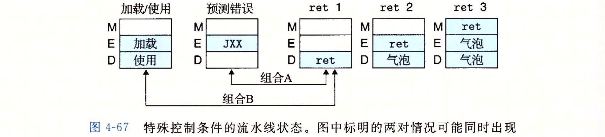
- 控制逻辑需要对可能的组合 A 与组合 B 进行适当的处理。
- Page 323Y86-64 的不足：
- 不支持“多周期指令”：在一个更完整的指令集中，还需要一些更复杂的指令，如：整数乘法和除法、浮点运算等。这些操作的典型执行时间从浮点数的 3~4 个周期到整数除法的 64 个周期。通过，会采用独立的功能单元来执行整数乘法和除法，还有一个执行浮点操作。当一条指令进入译码操作时，它可以被“发射”到这些特殊单元，而在特殊单元执行操作时，流水线还会继续处理其他指令。因此主流水线与其他单元之间需要进行同步，以避免出错。
- 与存储系统的接口：自我修改代码可能造成的冒险；所访问存储器的值可能位于硬盘，而这需要上百万个时钟周期才能够能将数据读入到内存中（流水线会暂停）。对其他缓存的考虑（读指令 L1、读写数据 L2、TLB、缺页异常等）。
- Y86-64 的五阶段流水线（其他的还有 i486 / SPARC）PIPE 处理器结构代表了 20 世纪 80 年代中期的处理器设计水平。较新的处理器支持“超标量”操作，意味着它们通过并行取指、译码和执行多条指令，可以使“每周期指令数（CPI）”大于 1。最先进的设计使用了“乱序”机制来并行地执行多条指令，执行的顺序也可能完全不同，但对于上曾的 ISA 模型却不变。
第五章、优化程序性能
- Page 343编译器对程序只使用安全的优化：
// 下述两个函数在 x 与 y 相等时所表示出的行为不同；
void bar(int* x, int* y) {
*x += *y;
*x += *y;
}
void foo(int* x, int* y) {
*x += 2 * (*y);
}
- 如果编译器不能确定两个指针是否指向同一个位置（即是否产生了 aliasing），就必须考虑所有的情况，而这便限制了可能的优化策略。
int f();
void bar() { // 不会被优化成类似 foo 的结构；
return f() + f() + f();
}
void foo() {
return 3 * f();
}
- 大多数编译器会假设最糟的情况，不会去试图判断一个函数有没有“副作用”，而是会选择保持所有的函数调用不变。
- Page 345表示程序性能：使用每元素周期数（Cycles Per Element，CPE）作为一种表示程序性能的方法。它可以帮助我们在更细节的级别上理解迭代程序的循环性能。(处理的元素数量与所花费时钟周期，这条直线的斜率)
- Page 355优化 — 消除不必要的内存引用：
优化前：
// ...
*dest = IDENT;
for (int i = 0; i < length; i++) {
*dest = *dest * data[i];
}
// ...
优化后：
// ...
data_t acc = IDENT;
for (int i = 0; i < length; i++) {
acc = acc * data[i];
}
*dest = acc;
// ...
- 上述优化可以减少每次迭代中的两次内存操作指令（使用局部变量代替指针引用的内存中的某个位置，局部变量可以被存放在寄存器中）；
- 出于保守，编译器无法进行类似的优化。
- Page 357两个描述程序最大性能的下界：
- 延迟界限：在下一条指令开始之前，当前这条指令必须结束。当代码中的数据相关限制了处理器利用指令级并行能力（多条指令可以并行地执行，但又能保证机器级程序要求的“顺序语义模型”）时，该界限会限制程序性能；
- 吞吐量界限：刻画了处理器功能单元的原始计算能力。这个界限是程序性能的终极限制。即假设程序需要的 N 个某种运算，而处理器只有 C 个能执行这个操作的功能单元，并且这些单元的发射时间为 I。假设可以使所有运算全部流水线化（没有数据相关导致的延迟），则至少需要 N*I/C 个周期。
- Page 358现代乱序处理器的基本结构：
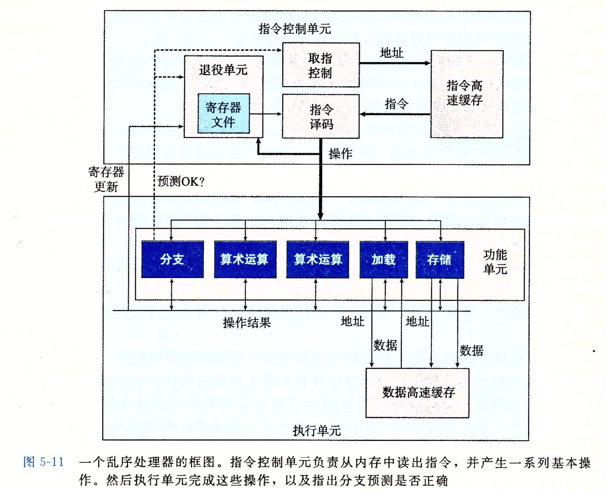
- 超标量处理器：可以在每个时钟周期执行多个操作（一条机器指令可能对应多个微操作）；
- 乱序执行（out-of-order）：指令的执行顺序不一定要和它们在机器级程序中的顺序一致；
- 指令高速缓存（instruction cache）：是一个特殊的高速存储器，包含有最近访问的指令；
- 分支预测：对于“分支指令”，处理器会预测是否选择分支，同时还预测分支的目标地址。如果分支预测错误，执行单元会丢弃分支点后的计算结果，同时发送信号给分支单元，要求其指出正确的分支；
- 投机执行（speculative execution）：处理器会开始取出位于它预测的分支会跳转地方的指令，并对指令译码，甚至在确定是否预测正确之前就开始执行这些指令，但计算出的结果值不会被存放到寄存器或内存中，直到处理器确认应该实际执行这些执行。如果过后确定预测错误，会将状态重置为分支点的状态，并取出和执行另一个方向上的指令；
- 指令译码逻辑：接收实际的程序指令，并将它们转换成一组基本操作（微指令），每个这样的操作都完成某个简单的任务；
- 功能单元：如“算数单元”，专门用来处理整数与浮点数相关的操作组合。多个功能单元的组合可以提供同时执行多个同类型操作的能力；
- 退役单元：记录正在进行的处理，并确保它遵守机器级程序的顺序语义。同时，“退役单元”还控制着程序寄存器的更新。指令译码时，指令的信息会被放置在一个队列中，一旦一条指令操作完成，而且所有引起这条指令的分支点也都被确认为预测正确，则该条指令退役（retired），所有对程序寄存器的更新可以执行；否则，若预测错误，该指令会被清空（flushed），并丢弃所有计算出来的结果；
- 加载单元：可保存未完成的读请求；
- 存储单元：可保存未完成的写请求；
- 寄存器重命名（register renaming）：一种控制操作数在执行单元间传送的最常见机制。当一条更新寄存器 r 的指令译码时，产生标记 t，这个标记会被后续的以寄存器 r 作为操作数的指令持有。而条目 “(r, t)” 会通过一张表来进行维护。当某个执行单元完成第一个操作时，产生一个结果 “(v, t)”，而所有等待 t 作为源的操作便都可以使用 v 作为源值。
- Page 361功能单元的性能：
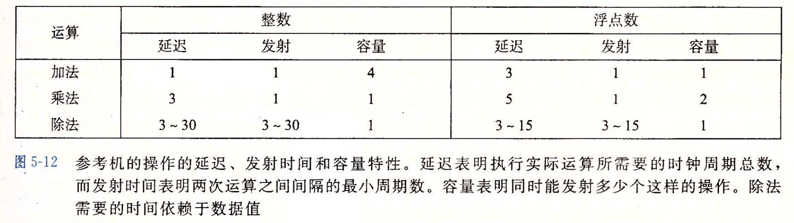
- 延迟：表示执行实际运算（即：得到计算结果，而非完全执行完成）所需要的总时间；
- 发射时间：表示两个连续同类型运算之间需要的最小时钟周期数（发射时间为 1 的功能单元被称为“完全流水线化”的）；
- 比如典型的“浮点加法器”包含三个阶段，对应三个周期的延迟：一个阶段处理指数值，一个阶段将小数相加，另一个阶段对结果进行舍入；
- 除法器的发射时间等于延迟，意味着在开始一条新运算之前，除法器都必须完成之前的整个除法操作。
- 容量：表示能够执行该运算的功能单元数量；
- 最大吞吐量：对一个容量为 C，发射时间为 I 的操作来说，处理器可能获得的最大吞吐量为每时钟周期 C/I 个操作。
- Page 364数据流图（DCG）分析：
机器级代码：
; void combine4(vec_ptr v, data_t* dest) {
; long i;
; long length = vec_length(v);
; data* data = get_vec_start(v);
; data_acc = IDENT;
; for (i = 0; i < length; i++) {
; acc = acc OP data[i];
; }
; *dest = acc;
; }
.L25: ; loop:
vmulsd (%rdx), %xmm0, %xmm0 ; Multiply acc by data[i].
addq $8, %rdx ; Increment data+i.
cmpq %rax, %rdx ; Compare to data+length.
jne .L25 ; If !=, goto loop.
DCGs：
vmulsd指令被扩展成为一个 load 操作，从寄存器中读出源操作数；以及一个 mul 操作，用以执行乘法。两个操作之间的中间数据没有与之相关联的寄存器；- 对于形成循环的代码片段，访问到的寄存器可以分为四类：
- 只读：这些寄存器只用作源值，循环中不被修改；
- 只写：这些寄存器作为数据传送操作的目的；
- 局部：这些寄存器在循环内部被修改和使用，迭代与迭代之间不相关，如条件码寄存器；
- 循环：这些寄存器即作为源值，又作为目的，一次迭代中产生的值会在另一次迭代中用到（它们之间的操作链决定了限制性能的数据相关）。
- cmp 与 jne 操作不直接影响程序中的数据流；
- 关键路径：指明了执行该程序所需时间的一个下界，即如果程序中有某条数据相关链，则这条链上的所有延迟之和等于 T，那么程序至少需要 T 个周期才能完成；
- 若假设乘法延迟为 5 个周期，而整数加法延迟为 1 个周期，则左边的链路（%xmm0）会成为“关键路径”，即在执行这个函数时，浮点乘法器成为了制约资源。循环中需要的其他操作与乘法器并行地进行（比如上一个迭代的 mul 还在执行，此时下一个迭代的 add 已经开始执行，因为这两个阶段的指令之间没有数据相关）。
- Page 366循环展开（-O3 情况下编译器一般可以自动执行该优化）：通过增加每次迭代计算的元素的数量，减少循环的迭代次数。
void combine6(vec_ptr v, data_t* dest) {
long i;
long length = vec_length(v);
long limit = length - 1;
data_t* data = get_vec_start(v);
data_acc0 acc0 = IDENT;
data_acc1 acc1 = IDENT;
/* Combine 2 elements at a time, 2x2 */
for (i = 0; i < limit; i += 2) {
acc0 = acc0 OP data[i];
acc1 = acc1 OP data[i + 1];
}
/* Finish any remaining elemtns */
for (; i< length; i++) {
acc0 = acc0 OP data[i];
}
*dest = acc0 OP acc1;
}
- 减少了不直接有助于程序结果的操作的数量，例如循环索引计算和条件分支；
- 提供了一些方法可以进一步变化代码，减少整个计算中关键路径上的操作数量：
- 展开的每一条语句都需要使用单独的“变量”来进行值累计的过程（多路并行，多个变量可以利用不同的寄存器进行运算），这样可以利用多个功能单元带来的指令并行性；
- 对延迟为 L，容量为 C 的操作来说，要求循环展开因子 k >= C*L（周期数。在发射时间为 1 的情况下，当同时有 L 条指令在执行时，流水线才是满的）才能使所有功能单元的流水线都是满的。
- Page 373重新结合变换（reassociation transformation）：改变向量元素与累积值的合并顺序。
C 代码：
void combine7(vec_ptr v, data_t* dest) {
long i;
long length = vec_length(v);
long limit = length - 1;
data_t* data = get_vec_start(v);
data_t acc = IDENT;
/* Combine 2 elements at a time */
for (i = 0; i < limit; i += 2) {
acc = acc OP (data[i] OP data[i + 1]); // point here!!!
}
/* Finish any remaining elements */
for (; i< length; i++) {
acc = acc OP data[i];
}
*dest = acc;
}
DCGs：
- “2 x 1a” 循环展开：减少了关键路径上串行操作的数量；
- *循环展开和并行地累计在多个值中，是提高程序性能的更可靠的办法。
- Page 378一些限制因素：
- 寄存器溢出：并行度 p 超过了可用的寄存器数量，编译器会诉诸“溢出”，而将某些临时值放到内存中，通常是运行时堆栈。因此可能会导致性能下降；
- 分支预测和预测错误处罚：投机执行在预测错误时，需要丢弃所有之前的运行结果，而这会导致流水线的重新填装，进而影响性能。
- 不要过分关心可预测的分支：比如边界检查。通常来说，“边界检查”不会消耗过多额外的性能，因为它可以与其他操作并行执行。并且处理器能够预测分支的结果，所以这些求值都不会对形成程序执行中关键路径的指令取值和处理产生太大的影响；
- 书写适合用条件传送实现的代码：分支预测只对有规律的模式可行。可以尝试一个模式：用条件操作（?:）来计算值，然后用这些值来更新程序状态，而不是选择性跳转。
// slow.
void fooA(long x[], long y[], long n) {
long i;
for (i = 0; i < n; i++) {
if (x[i] > y[i]) {
long t = x[i];
x[i] = y[i];
y[i] = t;
}
}
}
// fast;
void fooB(long x[], long y[], long n) {
long i;
for (i = 0; i < n; i++) {
long min = x[i] < y[i] ? x[i] : y[i];
long max = x[i] < y[i] ? x[i] : y[i];
x[i] = min;
y[i] = max;
}
}
- Page 382内存加载性能的一个例子：
; Inner loop of list_len.
; ls in %rdi, len in %rax.
.L3: ; loop:
addq $1, %rax ; Increment len.
movq (%rdi), %rdi ; ls = ls->next.
testq %rdi, %rdi ; Test ls.
jne .L3 ; If nonnull, goto loop.
- 后面寄存器 %rdi 的每个值都依赖于加载操作的结果，而加载操作又以 %rdi 中的值作为它的地址。因此，直到前一次迭代的加载操作完成，下一次迭代的加载操作才能开始。这里该函数的 CPE 值与机器 L1 级 Cache 的 4 周期访问时间是一致的。
- Page 383内存的写/读相关：一个内存读的结果依赖于一个最近的内存写。
机器级代码：
; void foo(long* src, long *dst, long n) {
; long cnt = n;
; long val = 0;
; while (cnt) {
; *dst = val;
; val = (*src) + 1;
; cnt--;
; }
; }
; int main() {
; long x[] = {-10, 17};
; foo(x, x, 3);
; return 0;
; }
; Inner loop of foo.
; src in %rdi, dst in %rsi, val in %rax.
.L3: ; loop:
movq %rax, (%rsi) ; Write val to dst.
movq (%rdi), %rax ; t = *src.
addq $1, %rax ; val = t + 1.
subq $1, %rdx ; cnt--.
jne .L3 ; If != 0, goto loop.
DCGs：
- 存储单元包含一个“存储缓冲区”。它包含已经被发射到存储单元而又还没完成（包括更新数据高速缓存）的存储操作的地址和数据。该缓冲区使得一系列存储操作不必等待每个操作都更新高速缓存就能够执行。而当一个加载操作发生时，则会首先检查该缓冲区中的条目，如果有则取出相应的数据条目作为加载操作结果；
- 三个数据相关：(1) 表示存储地址必须在数据被存储之前计算出来；(2) 表示需要 load 操作将它的地址与所有未完成的存储操作的地址进行比较；(3) 表示条件数据相关，当加载和存储地址相同时会出现。
- Page 387性能优化的基本策略：
- 高级设计：选择适当的算法和数据结构；
- 基本编码原则：
- 消除连续的函数调用；
- 消除不必要的内存引用。
- 低级优化：
- 展开循环，降低开销，使得进一步优化成为可能；
- 通过使用例如多个累计变量和重新结合等技术，找到方法提高指令级并行；
- 用功能性的风格重写条件操作，使得编译采用条件数据传送。
评论 | Comments